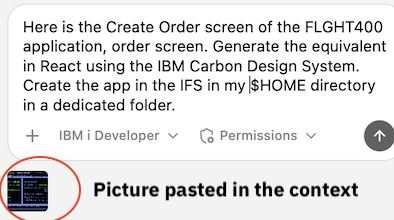

Bob needs an open folder to write code, create files, and remember context. Without one, it's just a chat window.
Open Folder in the Explorer panel
In the Explorer panel (left sidebar), click Open Folder. Navigate to your folder and click Select Folder. Bob is ready the moment the folder loads.
Use a dedicated, empty folder
Create a fresh, empty folder just for your Bob work — something like ~/bob-workspace. Bob can read every file in the open folder, so keeping it dedicated means it only sees what you intentionally put there. Don't open your home directory, Documents, or any folder with sensitive files.

VS Code Explorer — click "Open Folder" to get started
Lab Exercises
Complete Setup first, then work through the exercises in order. Click a card to expand its step-by-step instructions.